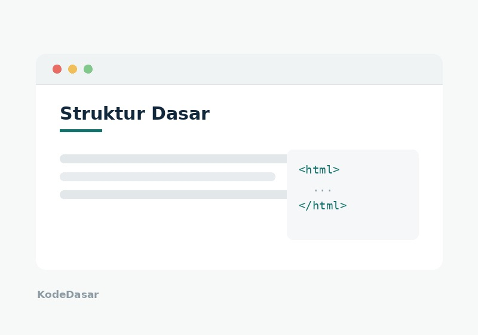
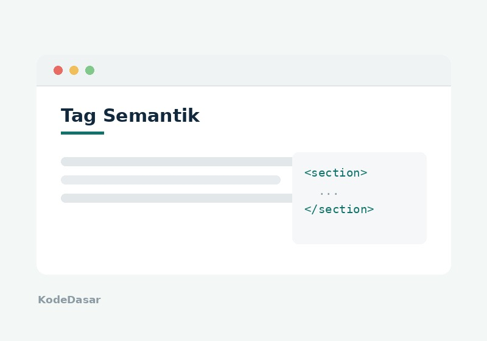
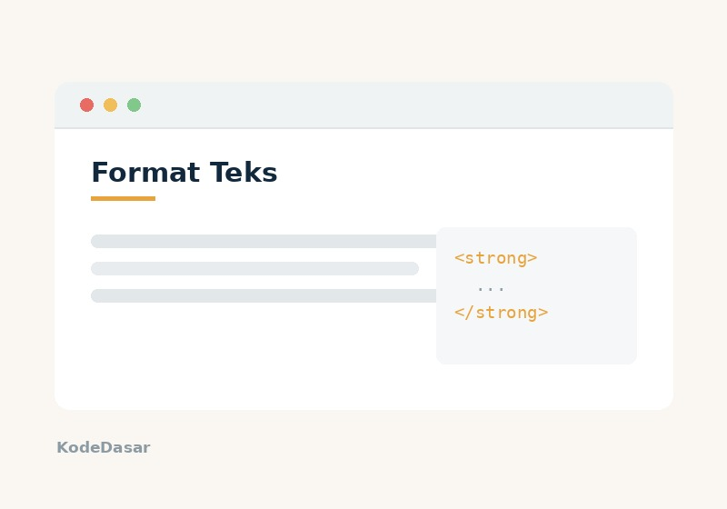
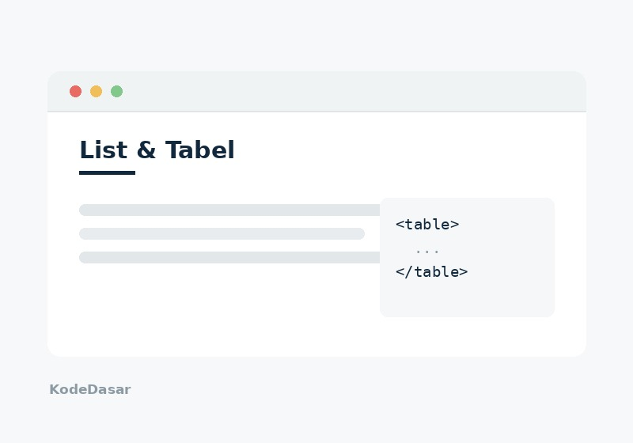
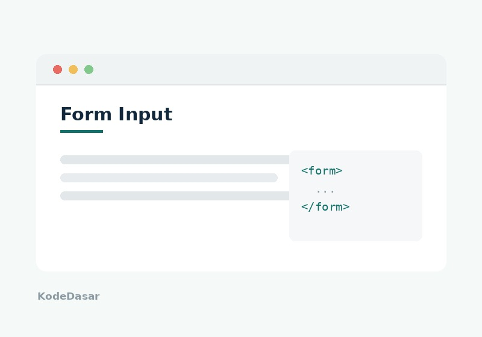
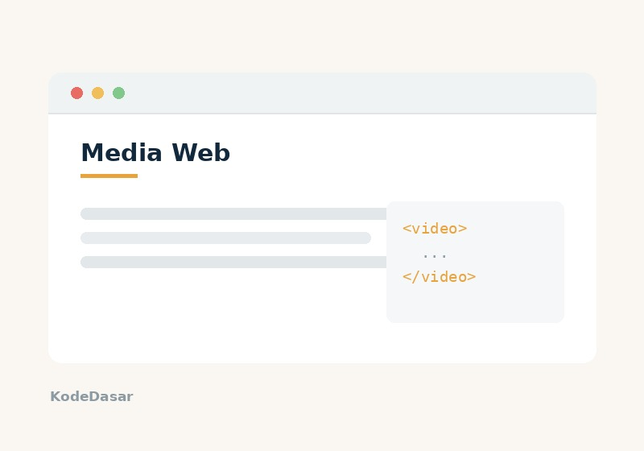
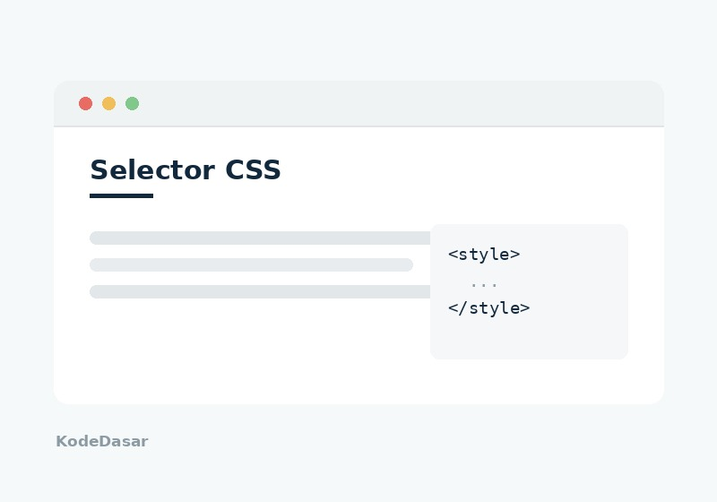
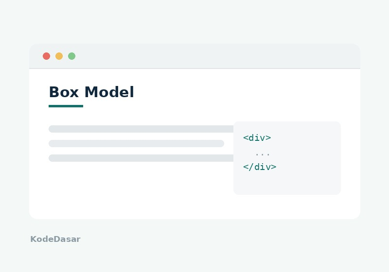

Galeri media
Kumpulan video, audio, dan ilustrasi pendukung materi yang ada di halaman ini.
Video pembuka materi
Video singkat berisi pengantar sebelum masuk ke materi HTML dan CSS.
Ditampilkan memakai tag <video> dengan atribut controls.
Video presentasi kelompok
Video presentasi ditampilkan dengan <iframe>, yaitu cara menyisipkan
halaman dari situs lain ke dalam halaman kita.
Audio penjelasan materi
Rekaman suara pendukung materi, ditampilkan memakai tag <audio>.
Sama seperti video, atribut controls dipakai supaya tombol putar
dan pengatur volume ikut muncul.
Ilustrasi materi
Pilih kategori untuk menyaring gambar yang ditampilkan.







